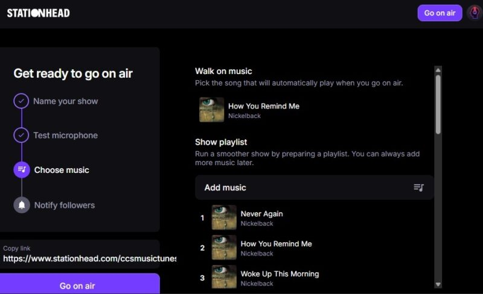
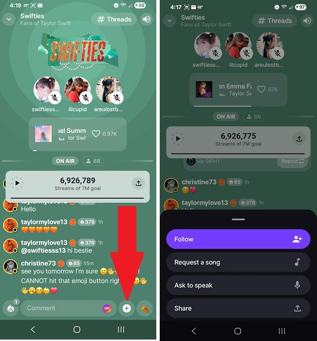

凌晨两点，我和三百陌生人在同一个频道里听完了Taylor的新专辑
当粉头八年，我以为集体听专辑这件事早就停留在论坛盖楼的年代了。直到朋友甩来一个叫 stationhead 的东西，让我在一台 Android 手机上搞定了本该在 iOS 上才能做的事。
我是那种在粉丝群里被喊了七年"姐"的粉头。专辑首发当夜组织大家在线听歌、同步发朋友圈、第二天晒歌单截图，这些事我干过不下二十次。但说实话，到 2024 年我已经有点倦怠了——大家各听各的，群里刷消息永远比音乐快半拍，有人说"这段 bridge 太美了"的时候，我早就听到下一首歌了。
所以今年春天 Taylor 宣布新专辑日期的时候，我本来没打算搞什么大型活动。直到有个小群友私戳我，扔过来一句话："姐你听说过 stationhead 吗？我们上次用这个一起听的，真的是同步的，连秒数都不差。"
我一开始以为那又是某个 Discord 语音频道加个共享播放器插件之类的东西——之前试过好几个，延迟、权限、反作弊，没一个能撑过开场三分钟的。但那个小群友给我截了个图，聊天窗口旁边挂着一个播放条，底下三百多个人的头像亮着，每一条聊天消息旁边都有个小小的绿色圆点，表示他们正在和你听同一秒。
然后我发现了一个尴尬的事实：我主力机是 Android。
Android 上开播的唯一出路
后来去stationhead官网看了一下平台支持说明——iOS App 是全功能的，点一下就能开播，能连 Spotify 也能连 Apple Music。但 Android 不一样，官方目前只开放了听众能力，开播按钮灰着，连 Apple Music 也不支持。FAQ 里写得很直白："Android 主播功能正在开发中，在此期间请通过浏览器开播。"
浏览器。这个词让我犹豫了一下——我用过的那些需要浏览器做核心功能的 App，体验基本都能概括成"能用，但不想用"。但 deadline 逼近，我没时间等 Android 端更新了。
登录 stationhead.com，点「Go on air」，三种模式选了「Talk + Music」——我打算自己开麦当半小时预热主持人，然后把麦交给群里两个常混直播的朋友。添加歌单的时候我才意识到 stationhead 最省心的地方：不需要曲库授权。直接从我自己的 Premium 账号拉歌就行，最多能放九十九首，对一张专辑来说绰绰有余。

整个开播流程不到五分钟。我甚至提前到了半小时，在空频道里试了试麦克风——能响。
同步的那一秒
开场那五分钟我一直盯着右上角的在线人数，从三十跳到一百二，跳到两百，最后停在三百一十七。群里提前发的通告果然管用。
然后我点了播放键。
那一刻的感觉很难用文字描述。你知道 Spotify 有 "Listen Together"，但那个功能是点对点的，最多五个人。你也知道 Clubhouse 或 Discord 语音，但那里没人真的在听同一首歌。stationhead 不一样——三百多个人真的在听同一个音符。我听到副歌升调的那一秒，聊天区同时刷出十几条"我靠"和对应的 emoji，连打字的节奏都和音乐的鼓点对齐。
有人后来告诉我，她在地铁里戴着 AirPods Pro，听到第一句歌词的时候差点坐过站。有人说他在加班的工位上，老板从背后走过他还在看聊天窗口，假装是在看工作群。还有一个人说他在老家，凌晨两点，爸妈都睡了，音量开到一格，耳机线绕了三圈才塞进耳朵。

聊天区的滚动速度快到我看不过来，但有一件事让我特别感动——没有人刷屏广告，没有钓鱼链接，连图片都发不了。stationhead 的聊天功能极简到有些原始：文字、emoji，仅此而已。不能发链接（就算发了也不能跳转），不能发图片，不能私信。整个界面干净得像十几年前的 IRC 频道。主播可以关掉聊天，也可以开 All Access 专属让只有每天签到的会员能发言——我没开那个，那晚的氛围太好了，不值得用规则去维护。
一个业余粉头的深夜电台
我当了二十多年粉丝，但从来没想过自己能站在"主播"这个位置上。stationhead 让这件事变得很便宜——不需要买设备，不需要申请曲库授权，不需要买域名服务器推流软件。iOS 用户从官方下载装完点一下就行，像我这种 Android 用户绕一下浏览器也能搞定。最多能带三个嘉宾一起开麦，相当于一个四主播的深夜电台。
那晚我和两个朋友轮流开麦。我负责开场和热场，另一个人负责背景故事分享（她对 Taylor 的创作背景了如指掌），第三个人管互动——他看到聊天区有人说某首歌听哭了，就主动邀请那个人上麦说两句。stationhead 的嘉宾邀请很简单，主播在界面里点一下就行，对方同意就上麦，不需要复杂的权限申请。
唯一的小插曲发生在凌晨两点四十——我自己突然听不到音乐了。界面显示正在播放，聊天区也有人在发消息，但我耳机里只有我自己的声音。那一瞬间我慌了三百毫秒，然后想起之前翻stationhead文档看到的排障步骤：先看流媒体连接状态，确认没断，然后——断蓝牙。
我那天连了 AirPods。蓝牙断开的那一刻，音乐从手机扬声器里倾泻而出，晚了大约八百毫秒，但在三百多个人的同步频道里，这点延迟没人察觉。后来才知道这是 stationhead 的老问题：蓝牙干扰音频输出，很多用户反馈过，官方 FAQ 里第一条排障就是"确保没有连接任何蓝牙设备"。
音乐结束之后
最后一首歌的尾音落下的时候，聊天区安静了三秒钟。然后有人发了一条："感谢今晚，这是我毕业之后第一次觉得自己还是十八岁。"
我坐在黑暗里，手机屏幕亮着，三百多个头像还在。有人在发晚安表情，有人在约下一次，有人在 Threads 留言板里写长帖——stationhead 有个 Threads 功能，是比实时聊天更慢节奏的讨论区，适合长一点的感想，需要 All Access 会员才能发帖。
我关掉频道，看了一眼时间：凌晨三点十二分。我一个 Android 用户，没有用任何 iOS 设备，通过一个浏览器，和三百多个陌生人一起，听完了一整张专辑，听着同一秒的鼓点，聊着同一段 bridge，其中有十几个人上麦说了自己的故事。
这件事让我重新想了一个问题：粉丝团到底是什么？以前我觉得是群公告、盖楼、集资。但那晚之后我觉得，真正的粉丝团可能就是这样——在某个特定的夜晚，三百多个人同时打开同一个频道，听同一首歌，因为同一个音符感动。而 stationhead 做的事情很简单：让这件事变得廉价，廉价到一个普通 Android 用户用浏览器就能搞定。
它也有很多不完美的地方：只有英文界面，Android 暂时不能开播，需要 Premium 订阅才能用，不支持图片和私信。但那晚我没觉得这些是问题。三百多个人在同一个频率上的感觉，比任何一款功能齐全的 App 都重要。
顺手说一句，我整理的那点笔记和资料在 GitHub、Gitee、GitCode 上都放了一份，选你用着顺手的那个就行。
以后 Taylor 再发专辑，我还会用它。